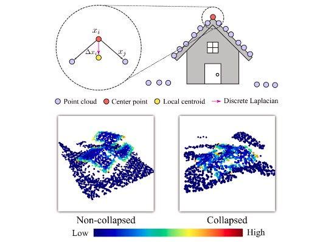
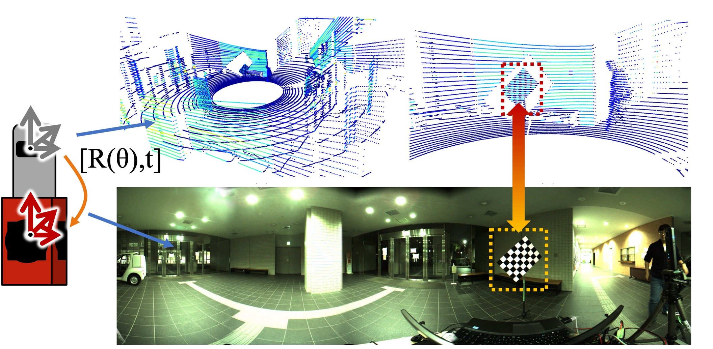
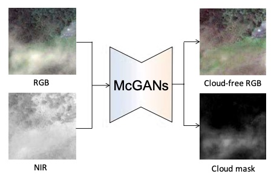

Weimin Wang (王维民)
Associate Professor
International School of Information Science and Engineering
Dalian University of Technology
Email: wangweimin [at] dlut (dot) edu (dot) cn
Google
Scholar /
DBLP /
ORCID /
Github /
中文
I am currently an Associate Professor of International
School of Information Science and Engineering at Dalian University
of Technology (DUT) . Before joining DUT, I was a researcher at Artificial Intelligence Research Center (AIRC) of AIST from 2018. I received the Ph.D. degree from Nagoya University in 2017, an M.Sc. degree from Osaka University in 2012 and a Bacheler degree from Shanghai Jiao Tong University (SJTU) in 2009.
I research machine perception, scene understanding and interaction from difference scales of the 3D physical
world using multimodal sensor data (Camera images, LiDAR 3D point clouds, Radar scans, etc.), aiming to enable machinces
to see the wolrd in super vision.
News
[2023.04] Homepage renewed.
[2023.02] One paper accepted by ICASSP 2013.
[2022.12] One paper accpeted by IJAEOG.
[2022.10] Co-organize a special issue on
Real-Time
Machine Vision Acceleration Technology and Applications at JRTIP.
Publications
(* indicates corresponding author)
[2023]
VAN-ICP: GPU-Accelerated Approximate Nearest Neighbor Search for ICP Registration via
Voxel Dilation
Weimin Wang,
Qiong Chang*
Optimizing Local Feature Representations of 3D Point Clouds with Anisotropic Edge
Modeling
Haoyi Xiu, Xin Liu*,
Weimin Wang*,
Kyoung-Sook Kim,
Takayuki Shinohara, Qiong Chang, Masashi Matsuoka

DS-Net: A dedicated approach for collapsed building detection from post-event
airborne point clouds
Haoyi Xiu, Xin Liu*,
Weimin Wang*,
Kyoung-Sook Kim,
Takayuki Shinohara, Qiong Chang, Masashi Matsuoka
International Journal of Applied Earth Observation and Geoinformation
[2022]
Weakly Supervised Point Cloud Upsampling VIA Optimal Transport
Zezeng Li,
Weimin Wang,
Na Lei, Rui Wang
Surgical Skill Assessment via Video Semantic Aggregation
Zhenqiang Li, Lin Gu, Weimin Wang*, Ryosuke Nakamura, Yoichi Sato
Spatio-Temporal Perturbations for Video Attribution
Zhenqiang Li, Weimin Wang*, Zuoyue Li, Yifei Huang, Yoichi Sato
IEEE Transactions on Circuits and Systems for Video Technology
Efficient Stereo Matching on Embedded GPUs with Zero-Means Cross Correlation
Qiong Chang, Aolong Zha, Weimin Wang, Xin Liu, Masaki Onishi, Lei
Lei, Meng Joo Er, Tsutomu Maruyama
Journal of Systems Architecture
[2021]
Towards Visually Explaining Video Understanding Networks with Perturbation
Zhenqiang Li, Weimin Wang*, Zuoyue Li, Yifei Huang, Yoichi Sato
Enhancing Local Feature Learning for 3D Point Cloud Processing using Unary-Pairwise
Attention
Haoyi Xiu, Xin Liu*,
Weimin Wang*,
Kyoung-Sook Kim,
Takayuki Shinohara, Qiong Chang, Masashi Matsuoka
Delivery of Omnidirectional Video using Saliency Prediction and Optimal Bitrate
Allocation
Cagri Ozcinar, Nevrez İmamoğlu, Weimin Wang, Aljosa Smolic
Signal, Image and Video Processing
[2020]
P2Net: A Post-Processing Network for Refining Semantic Segmentation of
LiDAR Point Cloud based on Consistency of
Consecutive Frames
Yutaka Momma, Weimin Wang*, Edgar Simo-Serra,
Satoshi Iizuka, Ryosuke Nakamura, Hiroshi Ishikawa
SOIC: Semantic Online Initialization and Calibration for LiDAR and Camera
Weimin Wang, Shohei Nobuhara, Ryosuke Nakamura,
Ken Sakurada
Densification of Airborne Lidar Point Cloud with Fused Encoder-Decoder Networks
Weimin Wang, Poliyapram Vinayaraj, Ryosuke
Nakamura
PSNet: A Style Transfer Network for Point Cloud Stylization on Geometry and Color
Xu Cao, Weimin Wang, Katashi Nagao, Ryosuke Nakamura
Weakly Supervised Silhouette-based Semantic Scene Change Detection
Ken Sakurada, Mikiya Shibuya, Weimin Wang
Z2-ZNCC: ZigZag Scanning based Zero-means Normalized Cross Correlation
for Fast and
Accurate Stereo Matching on Embedded GPU
Qiong Chang, Aolong Zha, Weimin Wang, Xin Liu,
Masaki Onishi,
Tsutomu Maruyama
[Before 2020]
A Point-wise LiDAR and Image Multimodal Fusion Network (PMNet) for Aerial Point
Cloud 3D Semantic Segmentation
Vinayaraj Poliyapram, Weimin Wang, Ryosuke
Nakamura
Remote Sensing, 2019
Image-matching based Identification of Store Signage using Web-crawled Information
Chenyi Liao, Weimin Wang, Ken Sakurada, Nobuo Kawaguchi
IEEE Access, 2018
Image Translation Between Sar and Optical Imagery with Generative Adversarial Nets
Kenji Enomoto, Ken Sakurada, Weimin Wang, Nobuo
Kawaguchi, Masashi Matsuoka, Ryosuke Nakamura

Reflectance Intensity Assisted Automatic and Accurate Extrinsic Calibration of 3D
LiDAR and Panoramic Camera using a
Printed Chessboard
Weimin Wang, Ken Sakurada, Nobuo Kawaguchi
Remote Sensing, 2017

Filmy Cloud Removal on Satellite Imagery with Multispectral Conditional Generative
Adversarial Nets
Kenji Enomoto, Ken Sakurada, Weimin Wang, Hiroshi
Fukui, Masashi Matsuoka, Ryosuke Nakamura, Nobuo Kawaguchi
Dense Optical Flow based Change Detection Network Robust to Difference of Camera
Viewpoints
Ken Sakurada, Weimin Wang, Nobuo Kawaguchi,
Ryosuke Nakamura
Incremental and enhanced scanline-based segmentation method for surface
reconstruction of sparse LiDAR data
Weimin Wang, Ken Sakurada, Nobuo Kawaguchi
Remote Sensing, 2016
UbiComp/ISWC 2015 PDR Challenge Corpus
Katsuhiko Kaji, Masaaki Abe, Weimin Wang, Kei
Hiroi, Nobuo Kawaguchi
A design of 0.7-V 400-MHz all-digital phase-locked loop for implantable biomedical
devices
Jungnam Bae, Saichandrateja Radhapuram, Ikkyun Jo, Weimin Wang, Takao
Kihara,
Toshimasa Matsuoka
IEICE Transactions on Electronics, 2016
Velobug: A Mobile System for 3D Indoor Mapping
Weimin Wang, Kenji Yamakawa, Kei Hiroi, Katsuhiko Kaji, Nobuo
Kawaguchi
Teaching
- Information Security, Fall 2021, Fall 2022
- Software Interface and Human–computer Interaction, Fall 2021, Fall 2022
- Object Oriented Technology UML, Spring 2022, Spring 2023
Projects
- First Person Vision in 3D Physical World at AIST in 2019-2021.
- Compact Mobile Mapping System at Nagoya University in 2017 and AIST in 2018.
- Indoor and Outdoor Mapping at Nagoya University in 2015-2017 and AIST in 2018-2019.
Services
[Co-organizer]
[Speical Issue] at Journal of Real-Time Image Processing
[Technical Committee] Complex Adaptive Systems Conference 2019
[Reviewer]
IEEE Conference on Computer Vision and Pattern Recognition (CVPR) 2023
IEEE International Conference on Computer Vision (ICCV) 2023
European Conference on Computer Vision (ECCV) 2022
Neural Information Processing Systems (NeurIPS) 2022,2023
International Conference on Machine Learning (ICML) 2023
Eurographics (EG) 2023
British Machine Vision Conference (BMVC) 2022
IEEE Robotics and Automation Letters (RA-L)
Pattern Recognition (PR)